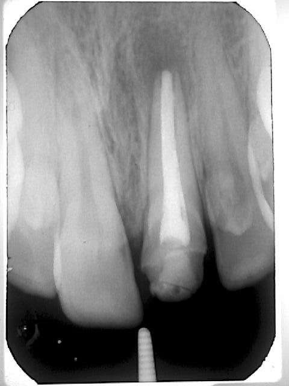

טיפול שורש בשן שלא סיימה את התפתחותה
בשן קבועה צעירה שלא סיימה את התפתחותה, השורשים עדיין לא מפותחים מספיק ולכן הם קצרים יותר, עם קירות דקים ותעלות רחבות שמסתיימות עם פתח רחב. לפני טיפול בשיניים אלו יש חשיבות לאבחנה של מצב הרקמה הפנימית, היות שאם הרקמה תקינה, ניתן למנוע טיפול שורש ולתת לשן להמשיך להתפתח. במצבים בהם הרקמה הפנימית של השן אינה תקינה, מבצעים טיפול שורש. טיפולי השורש בשיניים אלו מבוצעים בשיטות שונות, תלוי בשלב ההתפתחות שבו השורשים נמצאים.
להצגת מקרים →